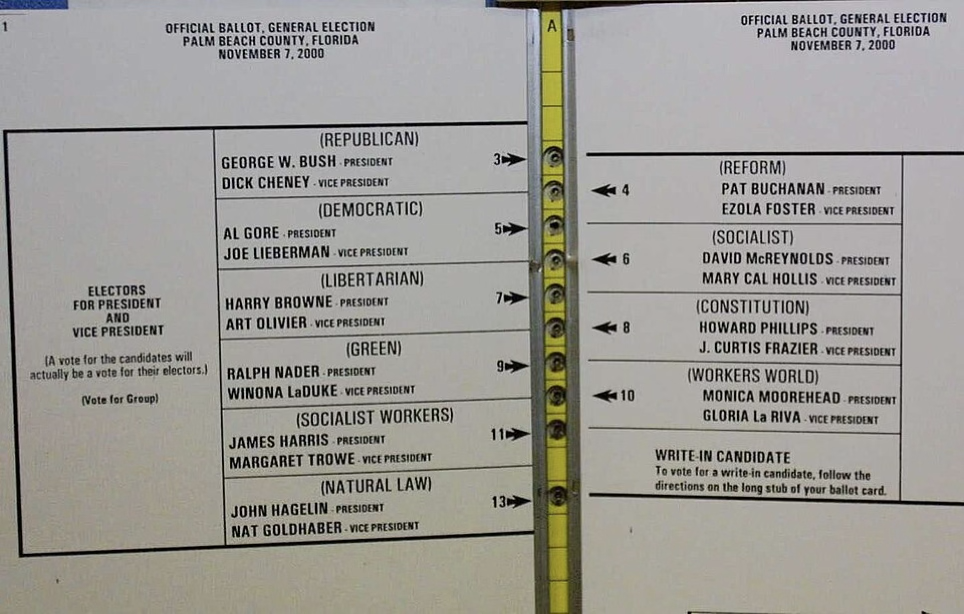
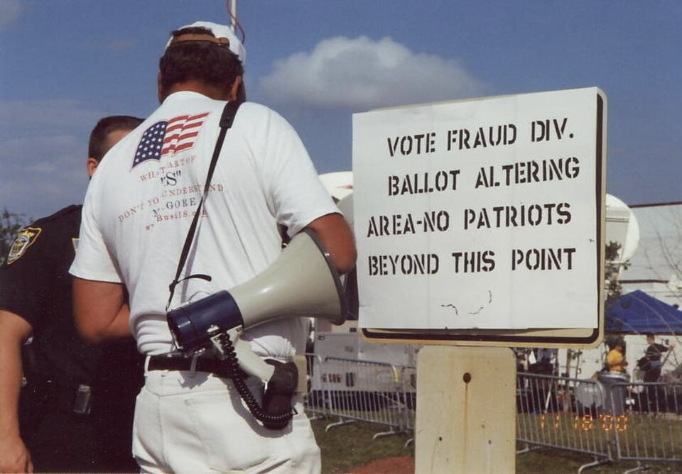

Interfaces governing high-stakes financial transactions and civic elections must adhere to absolute clarity in spatial mapping, visual hierarchy, and form design. When layout choices misalign physical punch targets or obscure payment processing options behind ambiguous checkboxes, millions of votes can be misdirected and hundreds of millions of dollars mistakenly transferred.
Case Study 1: The Palm Beach "Butterfly Ballot" (2000 U.S. Presidential Election)
In the 2000 U.S. presidential election, the outcome of the entire national contest hinged on Florida’s 25 electoral votes, where George W. Bush officially defeated Al Gore by a microscopic margin of 537 votes [4]. Controversy centered on Palm Beach County, where an estimated 2,000 to 3,000 Democratic voters accidentally voted for Reform Party candidate Pat Buchanan due to a fatally flawed voting interface known as the "Butterfly Ballot." [3]

Spatial Misalignment and Broken Mappings
Supervisor of Elections Theresa LePore designed the ballot layout to increase text size for Palm Beach County’s large elderly population. Because ten presidential candidates could not fit on a single page in large font, she placed candidate names across two facing pages, with a single central column of punch holes (chads) in the middle folder hinge.
- Spatial Mismatch: Voters looking at the left page saw Al Gore listed as the second candidate down, directly below George W. Bush. Naturally following a visual top-to-bottom spatial order, many voters punched the second hole in the central column.
- The Mapped Reality: The second hole actually lined up with an arrow pointing from the right-hand page, registering a vote for Pat Buchanan. To vote for Al Gore, a voter had to skip the second hole and punch the third hole.
- Catastrophic Usability Outcome: Statistical analyses published in the American Political Science Review proved that Buchanan’s vote count in Palm Beach County was a statistical anomaly unrepeated in any other U.S. county. In addition to thousands of miscast votes, over 19,000 ballots in Palm Beach County were invalidated as "overvotes" [4] because confused citizens punched holes for both Gore and Buchanan.

Case Study 2: The Citibank / Revlon Wire Transfer Blunder (2020)
On August 11, 2020, Citibank, acting as administrative agent for a Revlon loan facility, intended to execute an interest payment of $7.8 million to Revlon’s lenders. Instead, Citibank mistakenly wired $894 million[2] of its own corporate funds—paying off the entire principal balance of the loan years ahead of schedule [5].
Flexcube Payment Screen
Illustrative reconstruction of the payment interface.
- Principal payout account
54109822 – INTERNAL- Payment options
-
Suppress Principal (checked)
Front-Settled Refund (unchecked) - Operator’s intention
- Send only the $7.8 million interest payment.
- What the system did
- Sent approximately $894 million to external lenders.
Software Configuration and Ambiguous Form Controls
The massive blunder occurred within Citibank’s legacy banking software, Flexcube, during a complex loan restructuring operation:
- Confusing UI Architecture: To execute the interest-only payment without discharging the underlying loan principal, the operator had to routing-block the principal transfer. In Flexcube, this required routing the principal amount to an internal "wash account" and checking specific suppression boxes.
- Unchecked Checkbox Vulnerability: The primary operator checked the SUPPRESS PRINCIPAL box, believing this alone would prevent external transfer of principal funds. However, the interface required two additional obscure checkboxes (`FRONT-SETTLED REFUND` and `PAID-OFF REFUND`) to be configured in tandem to stop the external wire.
- Triplicate Human Approval Breakdown: The transaction passed through a three-tier approval workflow (preparer, checker, and approver). All three trained professionals reviewed the screen, saw that SUPPRESS PRINCIPAL was checked, and signed off[1]. The ambiguous UI layout failed to provide clear feedforward feedback explaining that $894 million was scheduled to leave the bank.
- Legal Aftermath: A federal court initially ruled that receiving lenders were entitled to keep over $500 million of the mistakenly wired funds under the "discharge-for-value" doctrine, forcing the financial industry to adopt mandatory "Revlon Blocker" clauses in credit contracts.

Sources
- Citibank made a $900 million mistaken payment a control-evidence accountability test
- Citibank sent 900 millions by mistake
- Butterfly ballot
- 2000 United States presidential election recount in Florida
- United States District Court, S.D. New York. *In re Citibank August 11, 2020 Wire Transfers*. 520 F. Supp. 3d 562, 2021.